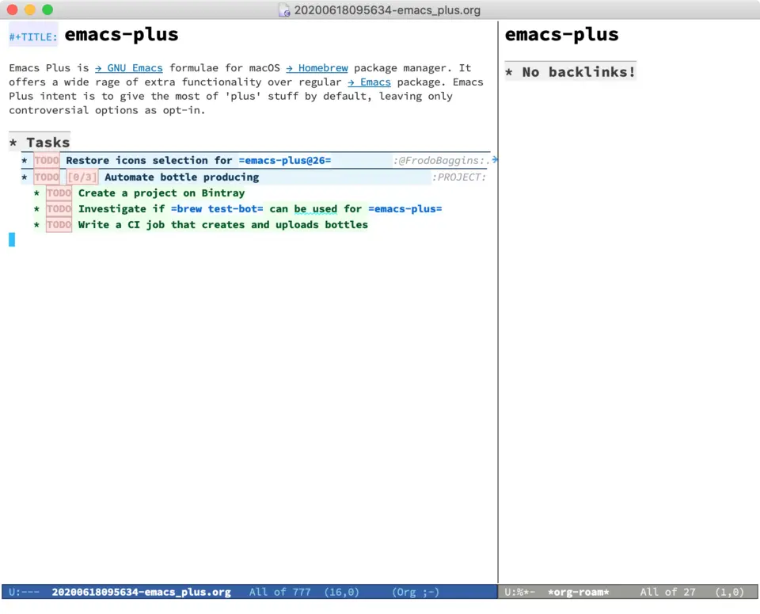
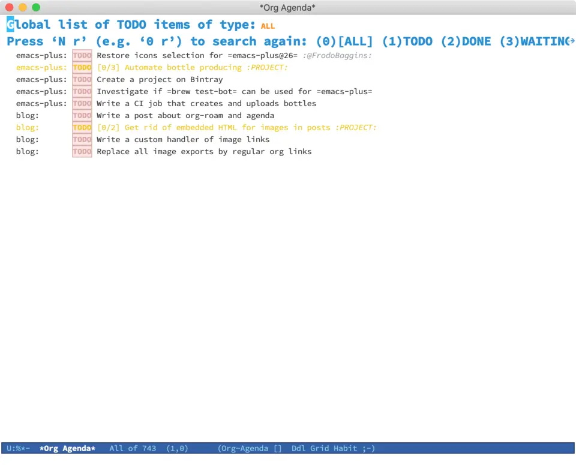
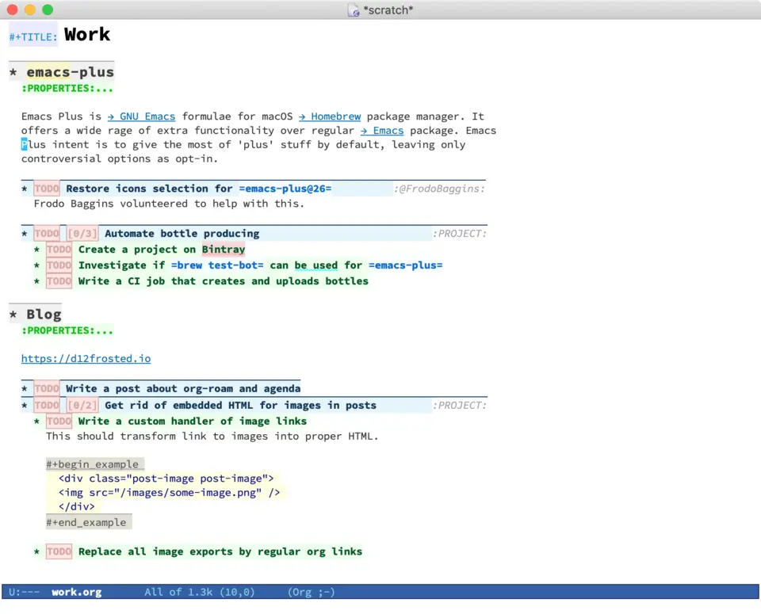
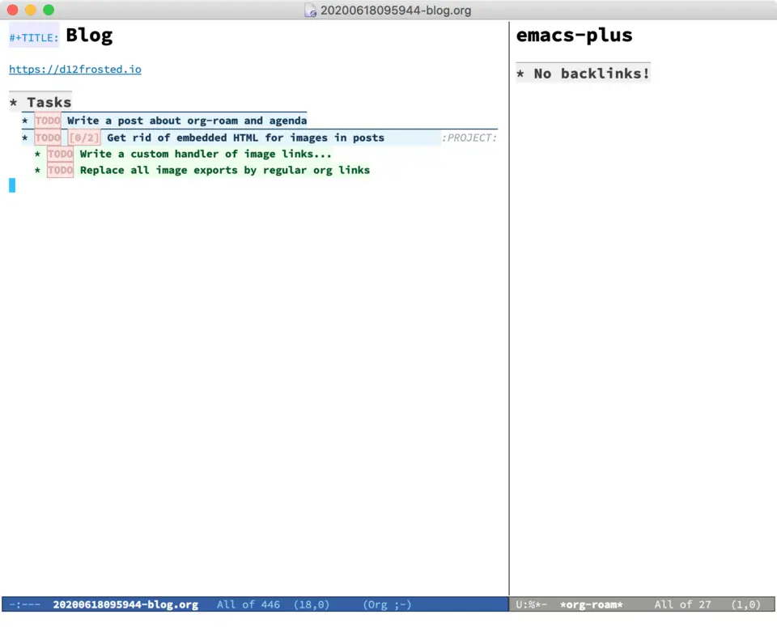
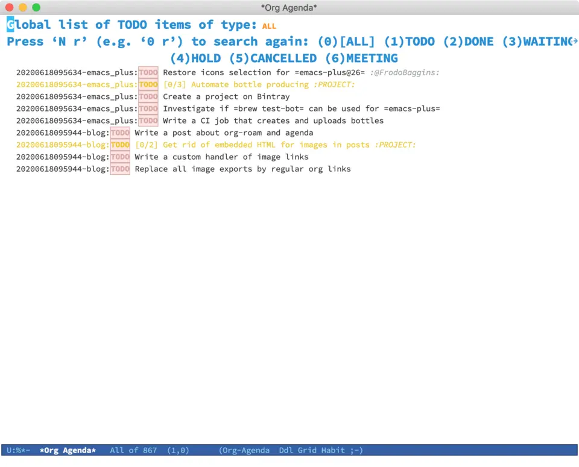

Task management with org-roam Vol. 1: Path to Roam
org-mode is a simple outliner for note taking and list management. It doesn’t impose any complex features on users. This is something users excel at by themselves. My suggestion is to continue this tradition and discover task management capabilities in org-roam, an org-mode extension for non-hierarchical notes management.

Change Log:
[2021-05-10 Mon]: Update post to reflect changes in org-roam v2. Previous version of this article is available on GitHub.
Since org-mode gives a lot of freedom, everyone implements tasks management system differently. In the nutshell, most of the implementations I’ve seen consist of the following elements.
- Task - the simplest actionable item with some
TODOstate. - Project - a
TODOitem with outcome requiring multiple steps to achieve it. - Meta project - long lasting project without a final outcome. It consists of projects or tasks. Think of it as of an area or a category. For example, personal blog is a meta project, as it doesn’t have any terminating outcome. It does have projects with specific outcome (like setting up your blog or writing a post) or simple tasks (like renewing SSL certificate), but the blog itself doesn’t have an outcome.
- Resource - a person, a tool, a location or whatever possibly related to a task. In plain org-mode usually implemented as a tag.
Take a look at the following example of org-mode file with all these elements.
#+title: Work
* emacs-plus
:PROPERTIES:
:CATEGORY: emacs-plus
:END:
Emacs Plus is [[https://www.gnu.org/software/emacs/emacs.html][→ GNU Emacs]]
formulae for macOS [[https://brew.sh][→ Homebrew]] package manager. It offers a
wide rage of extra functionality over regular
[[https://formulae.brew.sh/formula/emacs#default][→ Emacs]] package. Emacs Plus
intent is to give the most of 'plus' stuff by default, leaving only
controversial options as opt-in.
** TODO Restore icons selection for =emacs-plus@26= :@FrodoBaggins:
Frodo Baggins volunteered to help with this.
** TODO [0/3] Automate bottle producing :PROJECT:
*** TODO Create a project on Bintray
*** TODO Investigate if =brew test-bot= can be used for =emacs-plus=
*** TODO Write a CI job that creates and uploads bottles
* Blog
:PROPERTIES:
:CATEGORY: blog
:END:
https://d12frosted.io
** TODO Write a post about org-roam and agenda
** TODO [0/2] Get rid of embedded HTML for images in posts :PROJECT:
*** TODO Write a custom handler of image links
This should transform link to images into proper HTML.
#+begin_example
<div class="post-image post-image">
<img src="/images/some-image.png" />
</div>
#+end_example
*** TODO Replace all image exports by regular org links

As you can see, it has 2 meta projects: emacs-plus and personal blog, each containing a task and a project. Meta projects have their own category property (set by hand or using org-set-property which is bound to C-c C-x p by default), so in agenda view one can quickly distinguish (and filter) tasks from different meta projects (for example, using org-agenda-filter-by-category which is bound to < by default).

Formally (and technically) projects might be defined as a task having sub-tasks, but in this rare case I vote for simplicity - project is a task tagged as PROJECT.
When a task relates to a person or some location, I tag it respectively, just use @ symbol as a prefix to distinguish from utilitarian tags. Agenda helps to quickly find all tasks with specific tag. Use M-x org-agenda m or M-x org-agenda M (to list only TODO items).

With org-roam it makes sense to create a separate file for each meta project. In the endless debate ‘many small’ vs ‘few big’ org files, org-roam favours the former approach (though even this is debatable).
#+title: emacs-plus
Emacs Plus is [[https://www.gnu.org/software/emacs/emacs.html][→ GNU Emacs]] formulae for macOS [[https://brew.sh][→ Homebrew]] package manager. It
offers a wide rage of extra functionality over regular [[https://formulae.brew.sh/formula/emacs#default][→ Emacs]] package. Emacs
Plus intent is to give the most of 'plus' stuff by default, leaving only
controversial options as opt-in.
* Tasks
** TODO Restore icons selection for =emacs-plus@26= :@FrodoBaggins:
Frodo Baggins volunteered to help with this.
** TODO [0/3] Automate bottle producing :PROJECT:
*** TODO Create a project on Bintray
*** TODO Investigate if =brew test-bot= can be used for =emacs-plus=
*** TODO Write a CI job that creates and uploads bottles#+TITLE: Blog
https://d12frosted.io
* Tasks
** TODO Write a post about org-roam and agenda
** TODO [0/2] Get rid of embedded HTML for images in posts :PROJECT:
*** TODO Write a custom handler of image links
This should transform link to images into proper HTML.
#+begin_example
<div class="post-image post-image">
<img src="/images/some-image.png" />
</div>
#+end_example
*** TODO Replace all image exports by regular org links

So far the transition was simple. However as you can see, in agenda buffer the inferred category contains garbage - note id.
In the next article we are going to explore the means to fix the agenda buffer from the unwanted visual garbage. Stay tuned!
Task Management with org-roam Series
- Path to Roam
- Categories
- FILETAGS
- Automatic tagging
- Dynamic and fast agenda
- Select a person and view related tasks
- Capture
References
org-roamdocumentation on GitHub.org-modedocumentation on the official site.- Org Mode - Organize Your Life In Plain Text! by Bernt Hansen.